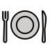

Here is one of the most useful ideas in Spanish. Where English says "I am hungry," Spanish says "Tengo hambre" — literally "I have hunger." Many everyday feelings work this way: you have hunger, thirst, cold, heat, sleepiness, fear, or a hurry. Even your age works like this: you don't say you are thirteen — you say you have thirteen years.
The verb is tener, which you conjugated in full yesterday. So this is pure vocabulary day: no new grammar, just the words to plug in after tengo, tienes, tiene…
Each expression is tener + a noun. The noun carries grammatical gender, so it's color-coded: masculine = blue, feminine = red. Press play and say each one aloud.
- tener hambreto be hungry (lit. to have hunger)
- tener sedto be thirsty (lit. to have thirst)
- tener fríoto be cold (lit. to have cold)
- tener calorto be hot (lit. to have heat)
- tener sueñoto be sleepy (lit. to have sleepiness)
- tener miedoto be afraid (lit. to have fear)
- tener prisato be in a hurry (lit. to have haste)
- tener ganas de…to feel like (doing something) + infinitive
- tener … añosto be … years old (lit. to have … years)
Just conjugate tener for the subject, then add the noun:
Yo tengo hambre. — I'm hungry. · ¿Tú tienes sueño? — Are you sleepy? · Ella tiene doce años. — She is twelve years old. · Yo tengo ganas de viajar. — I feel like traveling.



To ask someone's age, you ask how many years they have: ¿Cuántos años tienes? — literally "How many years do you have?" To answer, use tener + your number + años: Tengo trece años. Don't use ser or estar for age — age always rides on tener.